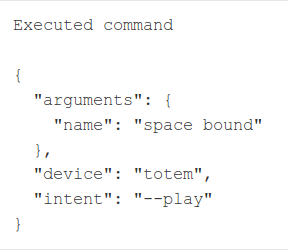
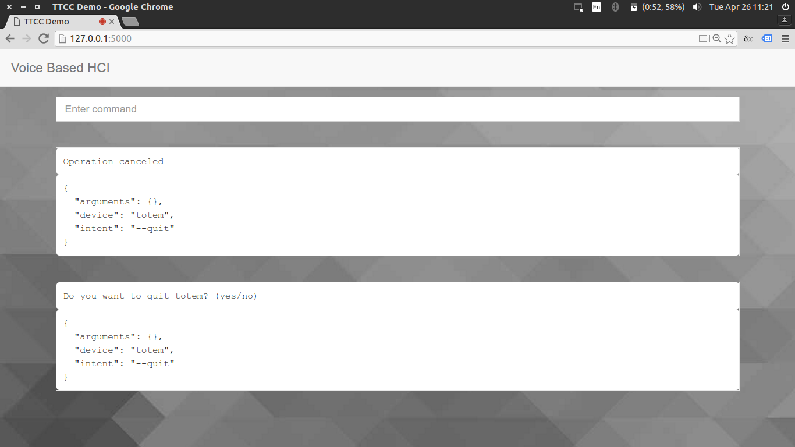
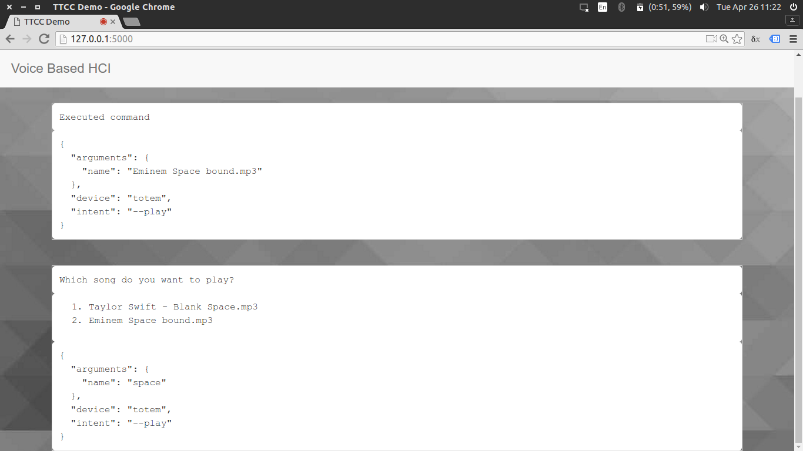

Hierarchical Rule Based Parser for the Conversion of Text to Commands for Human-Computer Interaction
Carried out by:
Prashant R (1RN12IS064)
Rohith PR (1RN12IS077)
Shreyas R (1RN12IS089)
Sushant K (1RN12IS101)
Under the guidance of:
Dr. M V Sudhamani
Professor and Head of Department
Dept. of Information Science and Engineering
Agenda
- Abstract
- Introduction
- Literature survey
- Functional and non-functional requirements
- Software and hardware requirements
- System architecture and design
- Modules: Client, Server, Application and Parser
- Testing
- Advantages and Disadvantages
- Comparison with a commercial tool
- Screenshots
- Future work and conclusion
Abstract
- Statistical methods are generally preferred over rule based methods for Natural Language Processing (NLP)
- Needs large training sets and expects grammatical correctness
- High degree of accuracy required for Human-Computer Interaction (HCI)
- Hierarchical rule based parser can overcome drawbacks
- Sentences are treated as a collection of meaningful phrases
Introduction
- Statistical methods have to be trained before being used
- Parts of speech tagging: probability based
- Sentences have to be parsed completely
- Problematic when the user does not know the language correctly
- Difficult to write rule based parsers as the number of rules grows exponentially
- Commercially available software is initially inaccurate
- Increases time to market due to tweaking needed by the parser
- Simple, general purpose, ready to use solution is required
Literature Survey
[1] Human-Computer Interaction: Overview on State of the Art by Fakhreddine Karray et. al.
- Contents of the overview
- Existing HCI and recent advances in HCI
[2] Speech Processing in Java-based PC Speech Commanding Application by Nguyen Chung et. al.
- Speech Recognition
- Development of Java based application
[3] The role of voice input for human-machine communication by Philip R. Cohen et. al.
- When speaking to computer is useful
- Other modes of communicating
[4] (mehrabani)
[5] (hiedelTime)
Non-functional Requirements
- Reliability: performs expected action
- Availability: gain trust
- Robust: errors, if any, should be localized
- Scalable: performance shouldn't drop with an increase in the number of applications
- Usability: simple interface that does not confuse users
- Portability: parser should be general purpose
- Testability: parser should have no side effects and testing should be automated
Functional Requirements
- Client should capture voice input and have it converted to text
- Server side controller should act as a communication pathway between other modules
- Parser should convert unstructured text to a structured format
- Application handlers must register themselves with the parser and take action based on its output
- External interface should display relevant information to the user
Software Requirements
- Operating System: Ubuntu 14.04, Debian 8
- Web Bowser: Google Chrome 49
- Front End: HTML, JavaScript, jQuery
- Back End: Python 3.4, Flask 0.10
- Server: Werkzeug 0.11
Hardware Requirements
- Processor: Intel i3
- RAM: 2GB
- Hard disk: 4GB
- Microphone
Other requirements: Vocabulary
- Reserved (4): start, stop, reset, quit, session
- Applications (11): media player, tweet, forecast
- Intents (65): play, fetch, temperature
- Arguments (6): song, topic, city, directory
- Modifiers (5): in, by, about, to, from, yes, no
System Architecture

System Design
The application has been built using a modular approach

Client Side
- Call speech recognition API to convert user's voice input to text
- Look out for reserved keywords
- Sends commands to the server once a session is started
- Responsible for tracking state
- Render output on screen
- Control front end applications based on the parser's output
Server Side
- Always active
- Serves HTML pages, static content
- Stateless
- Pathway between the other components
- Accepts and sends data in JSON format
Applications
- Has to be registered with the parser
- Each application has its own interface
- Independent execution handlers
- Can ask for additional information or confirmation
-
Supported applications:
- File explorer: Traverse the file system
- Totem: Play music locally
- SoundCloud: Stream music online
- Weather: Fetch reports from Open Weather
- Twitter: Get latest tweets
Parser
- Number of rules grows at the rate of n3
- Hierarchically organized collection of regular expressions
- Number of searches grows at the rate of n only
- Reduced search space: increased speed
- Declaration of capabilities reduces resource wastage

Registering and Parsing
{
'alias': ['totem', 'video player', 'media player'],
'operations': {
'--play': {
'triggers': [r'play video', r'play songs?', r'play'],
'arguments': {
'name': ['{trigger}(?P<name>( .*)?)((in )?{alias})?'],
}
}
}
}

{
"arguments": {
"name": "space bound"
},
"application": "totem",
"intent": "--play"
}
Testing
| Id | Input | Expected Application | Expected Intent | Actual Application | Actual Intent | Status | |
|---|---|---|---|---|---|---|---|
| 1 | totem play space bound | totem | play | totem | play | ✓ | |
| 2 | get tweets about cricket | tweet | cricket | tweet | cricket | ✓ | |
| 3 | soundcloud list pursuit | soundcloud | list | soundcloud | list | ✓ | |
| 4 | forecast describe weather | forecast | weather | forecast | weather | ✓ | |
| 5 | play forecast in music player | totem | forecast | forecast | null | ✗ |
Comparison
Command: "play space bound in media player"
| Commercial software | Proposed parser | |||
|---|---|---|---|---|
 |
 |
Confirm before performing critical operations
Request additional information
Future work
- Handle commands that require services of more than one application
- Detect negations
- Add support for multiple arguments of the same type
- Conflicts must be resolved correctly
- Record history to predict missing information
Conclusion
- Parses sentences that are grammatically incorrect
- Time complexity increases linearly with an increase in number of applications [ O(n) ]
- Errors do not degrade performance